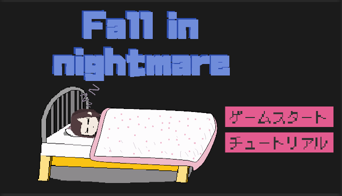
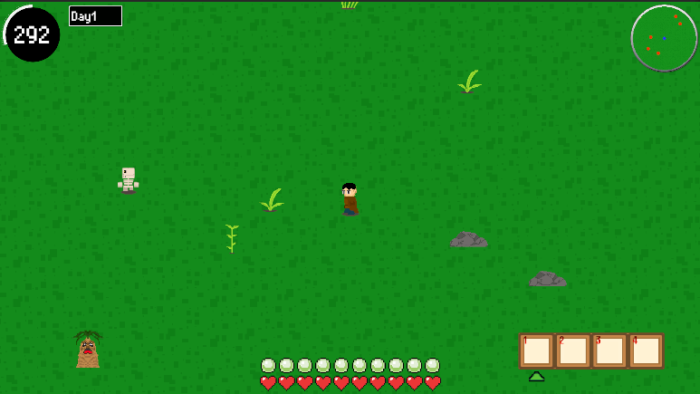

バンタンゲームアカデミー福岡校にてゲームプログラミングを学んでいます。
私の強みは、「新しいことに対して積極的に学んでいく姿勢と行動力」です。専門学校でのゲーム開発では、最新技術のキャッチアップに注力しました。
動作環境：Windows
ジャンル：3Dホラー
開発期間：2025年9月～2025年11月、2026年8月ブラッシュアップ
館に棲む化け物から逃げながら、その化け物を払うためのアイテムを集めて館の除霊を目指す。AIを使ったゲーム制作に取り組み、コーディング補助や3Dモデル作成などで高いクオリティのゲームを作成できた。
日本語、英語の2言語を選択可能に。ゲームクリア時にレポートを読めるように。

動作環境：Windows
ジャンル：2D横スクロールホラー
開発期間：2024年12月～2025年2月
悪夢の中で化け物に追いかけられながら、夢からの脱出を目指す。ゲームの中のプレイヤーや背景の家具等、UI周りをすべて自作して制作したことで、世界観を崩さずに作りたいゲームを制作できた。

動作環境：Windows
ジャンル：2DローグライクRPG
開発期間：2024年9月～2024年11月
開発人数：3人
モンスターと戦い、フィールド上の教会へたどり着き、生き延びる。
主にUI周りのプログラムなどを担当。